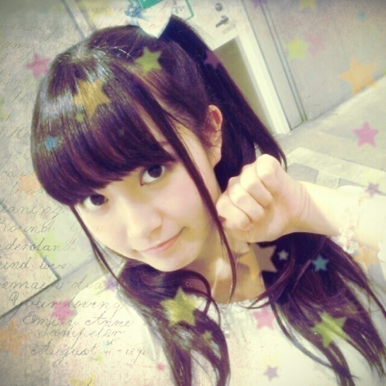
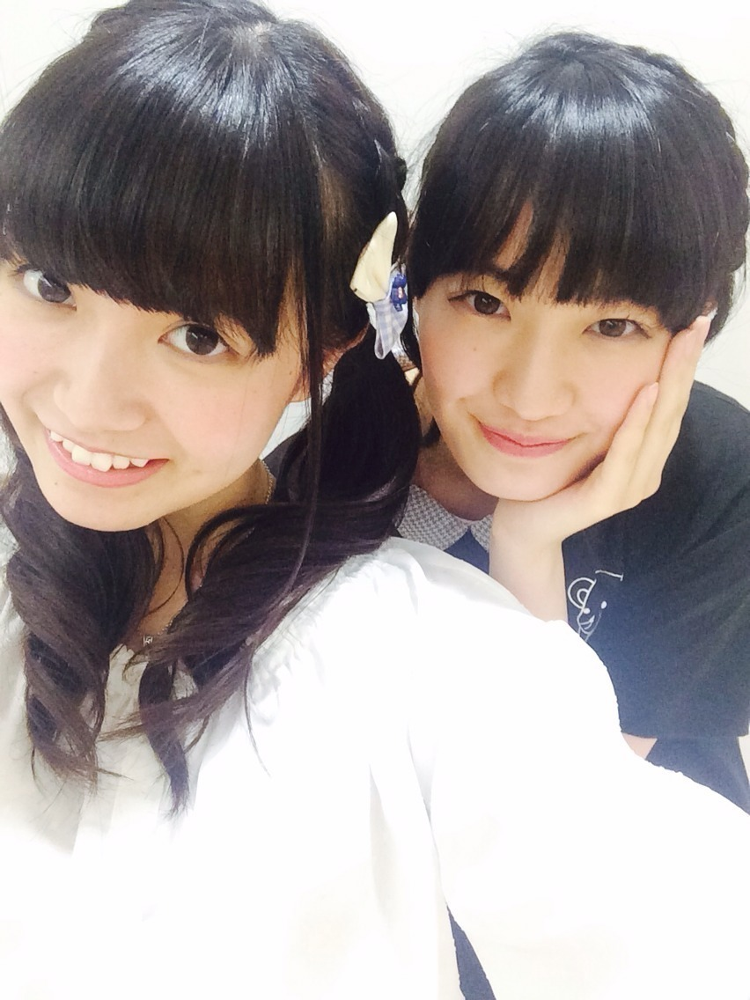
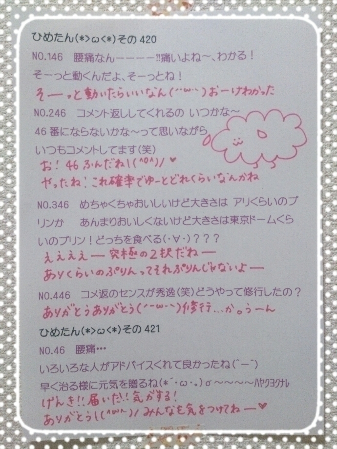

| 2014/08 04 Mon | ひめたん-OoO-その456 |

あすかりんの生誕祭で
恐縮ながらお手紙読ませていただきました
生誕委員のみなさん
飛鳥軍団(仮)のみなさん
私なんかで申し訳ない／(^o^)＼
あすかりんのこと大好き(ビジネス)なので
めちゃめちゃ光栄でした♡
あすかりーんこの日記読んでるかなー？
これからも仲良くさせてくださいねー
もちろん、あくまで、ビジネス。
昨日は個別握手会☆
来てくださったみなさん
ほんとにありがとうございました(^o^)！
1部＊さらさらストレート
いつもなら上着を羽織ったり
髪もくるくるーにして
シルエットをふわふわさせたりするんだけど
ちょっと冒険してみようと思って
ノースリーブの白ワンピ！
ひめたんのにのうでは
早起きしたひとの特権だよ(ノ)ω(ヾ)ぷ
2部＊ポニーテール

さくらんぼ
前の日記のコメントに
ポニーテールしてってひとが多かったから
さっそくやってみたんだけど
ポニーテールする前の写メしかなかった
ごめんね(´-ω-`)
3部＊はーふついんてーる

午後からはらぶりーひめたん
こっちのがいいなーてひとが多かったね
ひめたんはこっちのが好きです！
のぎ天 にゃんぽーず
いや、オンエアみてびっくりしたよ
あんなことやってたのじぶん(゜ω゜)
4部＊編み込みついん

肩からかなりん
でね、そう、気づいてくれたひともいたけど
このりぼん この前日記に載せた
記念すべき100個目のりぼん
まーまからのプレゼントだよ＊＊
お話の内容は
アンダーライブとかのぎ天とか乃木ののとか
ラブライブとかTIFとか色々。
ひめたんTシャツに加え
アンダーライブTシャツを着てるひとも
いらっしゃって嬉しいー♪
夏素材って感じで着心地いいから
パジャマとかにして使ってね
次の握手会が9月なんだって(´⊙ω⊙`)
なんだよ9月って(´⊙ω⊙`)遠いよ
でもライブとかラジオとか
いろんなとこでみなさんに会えるからね
10th制作もはーじーまーるー
寂しくなったら
ひめたんびーむでもしてみてね
何かが起きるかも起きないかもだよ♡♡♡
あ、1部のひと
ほんとにほんとに
お寝坊禁止だからねー！
ひめおこ( ˘•ω•˘ )なーんてね
おこじゃないけど、でも寂しいから
なるはやで来てね＊＊
ねー乃木のの聴いた？
新しいジングル！ひめたんの声ー♡
きゃー嬉しい\(﹡ˆOˆ﹡)/
齋藤飛鳥ちゃん
川後陽菜ちゃん でした！
なんかーわちゃわちゃしてたー
ひめたん楽しそうだったねんふふ
陽菜ちゃんは風邪かなんかだったみたいよー
やさしさなら間に合ってるのくだり
ナイス編集でしたね！！
乃木ののさんありがとうございます(笑)
次回もお楽しみにっ
のぎ天はパリ前編！
ひめたん全力で楽しんでるねー
素だねー恥ずかしいねー
パリ暑かったよー
パリの写メいっぱいあるんだけど
今日は握手会スペシャルになっちゃったから
次回いっぱい貼るからね♪
8月6日発売のTopYellさんに
載せていただいてます☆
かなりん、あみ、ねねころ とひめたん！
インタビューは
アンダーライブのこととか新曲のこととかを
メインにお話させていただきました( ^ω^ )

 ひめたんのブログ面白過ぎて
ひめたんのブログ面白過ぎて
今日の晩御飯全部吐いちゃった！！
きゃー大変♡♡♡
ひめたんってクーラーの温度何度にしてる？
僕は乃木坂にちなんで46度だよ
へーすごーい(´_ゝ｀)
ひめたんは冷房の風が苦手なので
うちは基本30℃です。
ひめか氏はいじられるの好き？
それともいじる方が好き？
もしくはこのブログでよく見られるように
やっぱ小バカにされるのが１番？
小バカにされるのはみなさんからだけでなく
メンバーからもよくやられるけど
別に好きではないです(笑)
えーどっちだろうー相手によりけりかなー
空気は読めるタイプの人間です。
ひめたんパン屋さんになったら
どんなパン焼きたい？
地元のパン屋さんに
ドラえもんパンってのがあって
それ見つけるたびにわくわくしてた幼少期があります
なんかーかわいいパン焼きたいなー
あ！ぷりんパン\(﹡ˆOˆ﹡)/
封印から解き放たれた魔物に俺の手が反応して
紅に染まっているけどどうしたらいい？
ああ、その手のやつは
陽菜ちゃんに相談してみたらいいと思うよ
全力で答えてくれると思うよー
ところで最近、ひめたんに
ひたすら消しゴム投げつけられるっていう
訳のわからん夢見たんだけど...
責任はちゃんと取ってくれるのかな？
何(・∀・)故
ひめたんの日記の
コメント欄下２ケタに46を踏んだ方へ
手書きでコメ返するコーナー
＼ ひめたん46 ／



いつもコメントたくさん
ありがとうございます
あ、10thのこと次回書くねー！
この前スクールの仲間たちに久々に会って
やーみんな頑張ってるんだなー
もっと頑張なきゃなーって思ったの
ぷっぷるるっとぅっとぅー
(＊´・ω・＊)
コメント(477)
2014/08/04 00:00